Game Style Icons
12 interface icons in 20 styles inspired by video games (240 SVGs, 64×64). Original artwork, no logos or characters; not affiliated with any game or publisher.
Cyberpunk 2077
Neon yellow on black, chamfered frame, chromatic glitch split
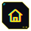
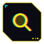
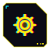
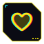
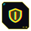
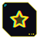
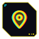
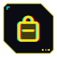
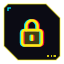
Borderlands
Cel-shaded: heavy black ink outlines, hand-drawn blobs, hatching
Grand Theft Auto
Radar blips: white glyphs with black outline on a dark minimap disc
Minecraft
16x16 pixel items in an inventory slot
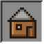
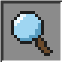
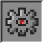
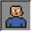
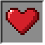
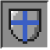
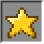
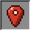
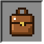
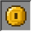
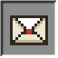
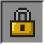
Fallout
Monochrome green CRT terminal with scanlines and phosphor glow
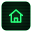
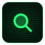
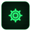
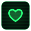
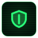
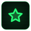
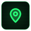
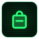
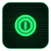
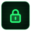
Zelda: Breath of the Wild
Slate tablet UI: thin cyan lines, dotted rings, one orange spark
Halo
Hexagonal HUD frame, cyan glow, corner brackets
Persona 5
Red burst, black slash, tilted white cut-out glyph
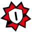
Hollow Knight
Pale ink on deep night, thin ring and curled ornament
Hades
Boon medallion: blood-red core, gold rings and rays
Portal
Clean test-chamber tile, dark linework, orange and blue rings
Mass Effect
Orange holographic omni-tool rings and glow
Doom
Riveted gunmetal plate, hellfire-orange glyph with hard outline
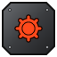
Splatoon
Neon ink splats with drips, white glyph, rotating ink colours
Animal Crossing
Soft cream card, leaf-green border, warm brown rounded lines
Hotline Miami
Synthwave: magenta-to-cyan glow, VHS lines, ghost offset
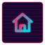
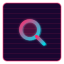
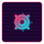
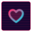
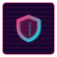
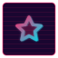
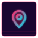
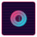
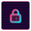
Mirror's Edge
White minimal, black line glyph, runner-vision red highlight
Diablo
Gothic medallion: gold spikes and ring, bone glyph over blood red
Pac-Man
Arcade maze: double blue walls on black, pellets
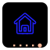
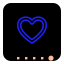
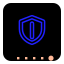
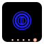
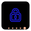
Overwatch
Slanted slate card, orange stripe, bold white glyph